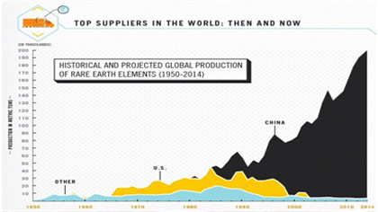
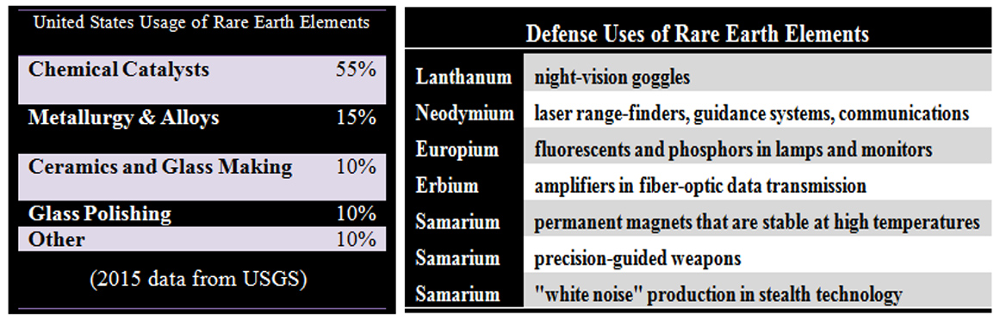
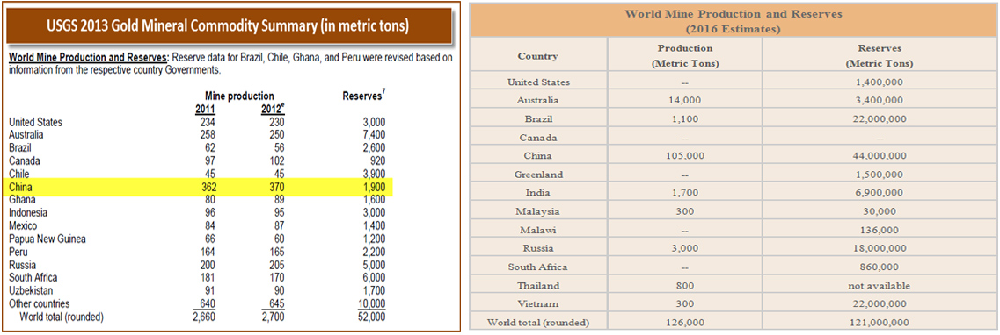

Rare Earth Minerals
What Are Rare Earth Minerals?
Minerals are mixtures of chemical elements organized into crystalline constructions. Earth's rocks are built from different combinations. "It's the rare minerals that tell us so much about how Earth varies from the Moon, from Mars, from Mercury, where the same mutual minerals exist, but it's the rare minerals that make Earth distinct". Of the 2,500 species labeled, none is known from more than five locations, and for a few of them the total worldwide supply could fit in a ferrule.The researchers say it is important to hunt down these peculiarities because they contain essential information about the creation of our planet.Some will also certainly have chattels that are useful in technological implication.Rare earth elements are a group of seventeen chemical elements that occur jointly in the periodic table. The group consists of yttrium and the 15 lanthanide elements (lanthanum, cerium, praseodymium, neodymium, promethium, samarium, europium, gadolinium, terbium, dysprosium, holmium, erbium, thulium, ytterbium, and lutetium). Scandium is found in most rare earth element deposits and is sometimes categorized as a rare earth element. The International Union of Pure and Applied Chemistry includes scandium in their rare earth element classification. The rare earth elements are all metals, and the group is often referred to as the "rare earth metals." These metals have many similar properties, and that often causes them to be found together in geologic deposits. They are also referred to as "rare earth oxides" because many of them are typically sold as oxide compounds.
The demand for rare earth elements has grown swiftly, but their existence in minable deposits is limited.

Rare Earth Element Production:
This chart shows a history of rare earth element production, in metric tons of rare earth oxide equivalent, between 1950 and 2016. It clearly shows the United States' entry into the market in the mid-1960s when color television exploded demand. When China began selling rare earths at very low prices in the late-1980s and early-1990s, mines in the United States were forced to close because they could no longer make a profit. When China cut exports in 2010, rare earth prices raised steeply. That inspired new manufacture in the United States,Russia, Australia,Malaysia, Thailand and other countries. In 2016, rare earth production in the United States stopped as the only remaining mine was put on care and preservation.
Uses of Rare Earth Elements
Rare earth metals and alloys that contain them are used in many devices that people use every day such as computer memory, DVDs, rechargeable batteries, cell phones, catalytic converters, magnets, fluorescent lighting and much more.During the past twenty years, there has been an explosion in demand for many items that require rare earth metals. Twenty years ago there were very few cell phones in use, but the number has risen to over 7 billion in use today. The use of rare earth elements in computers has grown almost as fast as cell phones.
Many rechargeable batteries are made with rare earth compounds. Demand for the batteries is being driven by demand for portable electronic devices such as cell phones, readers, portable computers, and cameras.
 Several pounds of rare earth compounds are in batteries that power every electric vehicle and hybrid-electric vehicle. As concerns for energy independence, climate change, and other issues drive the sale of electric and hybrid vehicles, the demand for batteries made with rare earth compounds will climb even faster.
Rare earths are used as catalysts, phosphors, and polishing compounds. These are used for air pollution control, illuminated screens on electronic devices, and the polishing of optical-quality glass. All of these products are expected to experience rising demand. Other substances can be substituted for rare earth elements in their most important uses; however, these substitutes are usually less effective and costly.
From the 1950s until the early 2000s, cerium oxide was a very popular lapidary polish. It was inexpensive and very effective. The recent price increases have almost eliminated the use of cerium oxide in rock tumbling and the lapidary arts. Other types of polish, such as aluminum and titanium oxide, are now used in its place.
Are These Elements Really "Rare"?
Rare earth elements are not as "rare" as their name implies. Thulium and lutetium are the two least abundant rare earth elements - but they each have an average crustal abundance that is nearly 200 times greater than the crustal abundance of gold. However, these metals are very difficult to mine because it is unusual to find them in concentrations high enough for economical extraction.The most abundant rare earth elements are cerium, yttrium, lanthanum and neodymium. They have average crustal abundances that are similar to commonly used industrial metals such as chromium, nickel, zinc, molybdenum, tin, tungsten, and lead. Again, they are rarely found in extractable concentrations.
Rare earth element map: In 2013, China produced about 90% of the world's supply of rare earth element ores. The USGS Mineral Commodity Summary reported production tonnages for Australia, the United States, India, Brazil, Russia, Vietnam, and Malaysia. Rare earth element exploration and/or development is being done in Canada, South Africa, Thailand, Malawi, and Sri Lanka; however, production from those countries was insignificant during 2013.

Dangers of a Dominant World Producer
Supply and demand normally determine the market price of a commodity. As supplies shrink, prices go up. As prices go higher, those who control the supply are tempted to sell. Mining companies see high prices as an opportunity and attempt to develop new sources of supply.With rare earth elements, the time between a mining companies's decision to acquire a property and the start of production can be several years or longer. There is no fast way to open a new mining property.
If a single country controls almost all of the production and makes a firm decision not to export, then the entire supply of a commodity can be quickly cut off. That is a dangerous situation when new sources of supply take so long to develop.
In 2010 China significantly restricted their rare earth exports. That was done to ensure a supply of rare earths for domestic manufacturing and for environmental reasons. This shift by China triggered panic buying, and some rare earth prices shot up exponentially. In addition, Japan, the United States, and the European Union complained to the World Trade Organization about China's restrictive rare earth trade policies.
Rare earth oxides: These rare earth oxides are used as tracers to determine which parts of a watershed are eroding . Clockwise from top center: praseodymium, cerium, lanthanum, neodymium, samarium, and gadolinium.